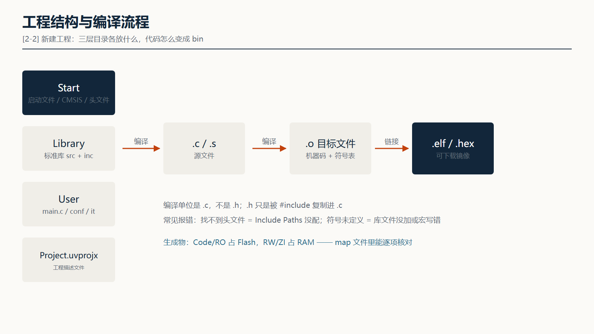

课程时长：约 42 分钟 | 深度版 | 配套结构图与看图理解
这是整门课的地基。工程建不对，后面每一节都会卡在编译、下载、找不到头文件上。本节不写业务代码，只做一件事：把“写代码 → 编译 → 下载 → 运行”这条链路一次性打通，并固化成模板。
判断这一节有没有过关，标准很具体：不看教程、从零建一个工程，能在 20 分钟内编译出 0 error、下载后灯能亮，并且能说清每个文件为什么放在那一层。
独立搭出 Start / Library / User 三层目录
说清 startup、system、conf、it 四个文件各自的分工
理解魔术棒四项配置的作用与配错后的症状
能把工程存成模板，后续每节直接复制

图 1 工程三层目录与“源文件 → 目标文件 → 可执行镜像”的编译链接流程
看图顺序：先看左边三个目录——它们对应“启动与内核 / 外设驱动 / 你的代码”三类文件；再看右边流水线——每个 .c 单独编译成 .o，最后由链接器把 .o 与库拼成 elf/hex。
图里没有 .h，因为头文件不参与编译，它只是被 #include 复制到每个 .c 的开头。理解这一点，就明白两件事：为什么改 .h 会导致多个文件重编；为什么 .h 里不能放函数体（会被复制多份，链接时重复定义）。
Keil 不管理文件结构，你给它什么它就编译什么。分层不是为了好看，而是为了出问题时能立刻定位是哪一层的责任。
Start 是“芯片能不能跑起来”的部分，Library 是“外设驱动”，User 是“业务逻辑”。三层之间只通过函数调用发生关系，不互相包含 .c。
| 目录 | 放什么 | 出问题时的典型症状 |
|---|---|---|
| Start | startup_stm32f10x_md.s、system_stm32f10x.c/h、stm32f10x.h、core_cm3.c/h | 下载后不运行、进不了 main |
| Library | 标准库 src/*.c 与 inc/*.h | undefined symbol、外设函数找不到 |
| User | main.c、stm32f10x_conf.h、stm32f10x_it.c/h | 业务逻辑错误、中断函数没被调用 |
startup_stm32f10x_md.s：复位后第一条指令，建立栈顶、初始化 .data/.bss、跳 SystemInit 与 main；中断向量表也在这里
system_stm32f10x.c：SystemInit() 配置 HSE + PLL，把时钟从默认 8MHz HSI 切到 72MHz
stm32f10x_conf.h：决定哪些外设头文件被包含，相当于功能开关
stm32f10x_it.c：集中放中断服务函数，默认是空实现，写中断时往里填
Target → Xtal 填 8：只影响仿真时序，填错编译不受影响，但软件仿真会不准
C/C++ → Define 填 USE_STDPERIPH_DRIVER, STM32F10X_MD：告诉库“用标准库、我是中容量”，漏了会报一堆 undefined symbol
C/C++ → Include Paths 加三个目录：少一个就报 cannot open source file
Debug → ST-Link + Port SW：选错或线错，下载报 No ST-LINK detected 或 Target DLL has been cancelled
编译把 .c 变成 .o，链接把 .o 和库拼成 elf。Build Output 里那行 Program Size 是判断“装不装得下”的唯一依据。
Code 与 RO-data 常驻 Flash；RW-data 的初值存在 Flash，运行时复制到 RAM；ZI-data 不占 Flash，只在 RAM 里清零。所以“Flash 够、RAM 爆”是两件独立的事。
| 段 | 内容 | 占 Flash | 占 RAM |
|---|---|---|---|
| Code | 指令 | 是 | 否 |
| RO-data | const 常量、字符串、查表 | 是 | 否 |
| RW-data | 已初始化的全局/静态变量 | 是（初值） | 是 |
| ZI-data | 未初始化或初值为 0 的变量 | 否 | 是 |
1 新建工程 → 选 STM32F103C8 2 建 Start / Library / User 三个组 3 把 .s / .c / .h 加进对应组 4 魔术棒：Define 与 Include Paths 5 魔术棒：Debug 选 ST-Link、Port 选 SW 6 F7 编译，确认 0 error 7 F8 下载，勾 Reset and Run 后自动运行
把整个文件夹复制一份、改名、删掉 Objects 与 Listings 里的中间文件，就得到干净模板。以后每节课从模板开始，避免重复配置。
模板要固定放在纯英文路径（如 D:\STM32\），并纳入 Git。每次实验一个提交，改坏了随时回退。
为什么必须分层：C 的编译单位是 .c，一个 .c 只能看见同文件里定义过的东西。分层把“芯片启动”“外设驱动”“业务逻辑”拆成独立的编译单元，改一处只重编一个文件，而不是整包重来。
为什么宏要写 STM32F10X_MD：标准库用条件编译区分容量等级，中容量与大容量的寄存器映射、中断向量数量不同。宏写错，编译能过但运行时的向量表与内存布局是错的，症状极难查。
例：F103C8 有 64KB Flash、20KB RAM。若编译结果 Code=12KB、RO=4KB、RW=1KB、ZI=6KB：Flash 占用 = 12+4+1 = 17KB（余 47KB）；RAM 占用 = 1+6 = 7KB（余 13KB）。
结论：判断“装不装得下”要看两行，不是一行。很多人只看 Flash，结果运行到一半栈溢出。
| 错误写法 | 后果 | 正确做法 |
|---|---|---|
| 在 .h 里写函数体 | 被多个 .c 包含 → 重复定义 | 声明放 .h，定义放 .c |
| #include "xxx.c" | 重复定义、编译变慢 | 只 include .h |
| 漏写 USE_STDPERIPH_DRIVER | 链接报 undefined symbol | 魔术棒 Define 补上 |
| 工程放中文路径 | 找不到文件、生成失败 | 移到纯英文目录 |
为什么启动文件必须是汇编：芯片刚上电时 C 的运行环境还不存在——栈指针没设、.data 段还没从 Flash 拷到 RAM、.bss 还没清零。这些事只能由汇编完成，做完才跳进 C 的 main。所以 startup 不是可选配置，而是程序能跑起来的前提。
为什么 Define 写错会报 undefined symbol 而不是语法错误：标准库的 .c 里大量使用 #ifdef 条件编译，宏没定义时整段函数被裁掉，编译器不报错，链接器才发现“有人调用但没人实现”。这也是这类错误总在链接阶段出现的原因。
编译后看 Build Output 的 Program Size，四段是否都在容量内
用 fromelf --text -c 反汇编，确认 main 的入口地址与 startup 跳转一致
故意删掉一个库文件，读一遍 undefined symbol 的完整报错
| 现象 | 原因 | 解决 |
|---|---|---|
| cannot open source file | Include Paths 没配全 | 三个目录都加上 |
| undefined symbol | Define 写错或库 .c 没加 | 检查宏与分组 |
| No ST-LINK detected | 驱动/接线 | 装驱动，查四根线 |
| 下载成功但不跑 | 没勾 Reset and Run 或 BOOT0 悬空 | 勾选；BOOT0 接 GND |
| 中文路径报错 | 工具链不兼容 | 移到纯英文路径 |
Q1. 头文件里为什么不能写函数体？
A：被多个 .c 包含会产生多份定义，链接报重复定义。
Q2. Use MicroLIB 是干什么的？
A：用精简 C 库，体积小，并提供 printf 重定向所需钩子。
Q3. map 文件用来看什么？
A：各段地址与大小、符号占用、栈堆位置，排查溢出与定位函数。
Q4. 为什么启动文件分 _md/_hd？
A：对应中容量/大容量器件的 Flash 与 RAM 大小、向量表长度不同。
Q5. 点灯工程最少要哪些文件？
A：startup、system、stm32f10x.h、conf、it、main，以及用到的库 .c。
Q6. 为什么工程要备份？
A：Keil 工程文件与中间产物易损坏，模板 + Git 能快速恢复。
Q7. startup 文件为什么分 md/hd？
A：对应中容量/大容量器件的 Flash、RAM 与向量表长度不同。
Q8. 为什么每次实验都要打 tag？
A：出问题能精确回到“上次能跑”的状态。
1. startup 文件做了哪三件事？
答：设栈顶、初始化 .data/.bss、跳 SystemInit 与 main。
2. ZI-data 占 Flash 吗？
答：不占，只在 RAM 中清零。
3. Include Paths 少一个目录会怎样？
答：编译报找不到头文件。
4. 为什么要勾 Create HEX？
答：生成 hex 便于串口 ISP 或脱机烧录。
5. 模板里要删哪些文件？
答：Objects、Listings 等中间产物。
☐ 三层目录齐全
☐ 四个魔术棒配置正确
☐ 能一键编译 0 error
☐ 能下载并看到现象
☐ 已保存模板并提交 Git